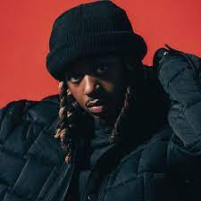
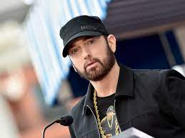

Esta es una página sobre los cantantes más importantes y reconocidos este 2023... ¡Bienvenido!
Arijit Singh es un cantante y compositor indio. Recibió varios galardones, incluido un Premio Nacional de Cine y seis Premios Filmfare, ha grabado canciones en varios idiomas indios y se ha establecido como uno de los principales cantantes de reproducción de Bollywood.
Haz clic AQUI para poder ver las redes sociales de este gran cantante...
Leland Tyler Wayne, conocido profesionalmente como Metro Boomin es un productor, ejecutivo de discos, compositor y DJ estadounidense. Criado en St.

Haz clic AQUI para poder ver las redes sociales de este gran cantante...
Marshall Bruce Mathers III, más conocido como Eminem es un rapero, cantautor, productor y actor estadounidense. Se le atribuye la popularización del hip hop en el centro de Estados Unidos y es aclamado por la crítica como uno de los mejores raperos de todos los tiempos.

Haz clic AQUI para poder ver las redes sociales de este gran cantante...
BTS es un grupo surcoreano formado en Seúl en 2010, que debutó el 13 de junio de 2013 bajo la compañía Big Hit Music. Está compuesto por siete integrantes: Jin, Suga, J-Hope, RM, Jimin, V y Jungkook, quienes son los que coescriben y coproducen la mayor parte de su material discográfico.
Haz clic AQUI para poder ver las redes sociales de este gran grupo...
Shéyaa Bin Abraham-Joseph, más conocido por su nombre artístico 21 Savage, es un rapero, cantante y compositor británico. Es más conocido por sus Mixtapes, The Slaughter Tape, Slaughter King por blood y sus EP Free Guwop y Savage Mode con Metro Boomin.
Haz clic AQUI para poder ver las redes sociales de este gran cantante...
Solána Imani Rowe, conocida profesionalmente como SZA, es una cantante y compositora estadounidense.

Haz clic AQUI para poder ver las redes sociales de esta gran cantante...
Aubrey Drake Graham, conocido simplemente como Drake, es un rapero, cantante, compositor, productor discográfico y actor canadiense. Originalmente se hizo conocido por interpretar al personaje de Jimmy Brooks de la serie de televisión Degrassi: The Next Generation.
Haz clic AQUI para poder ver las redes sociales de este gran cantante...
Abel Makkonen Tesfaye, conocido artísticamente como The Weeknd, es un cantante, compositor y productor discográfico canadiense. Conocido por su versatilidad sónica y lirismo oscuro, su música explora el escapismo, el romance y la melancolía, y a menudo se inspira en experiencias personales.
Haz clic AQUI para poder ver las redes sociales de este gran cantante...
Taylor Alison Swift es una cantautora, productora, directora, actriz y empresaria estadounidense. Criada en Wyomissing, se mudó a Nashville a los 14 años para realizar una carrera de música country.
Haz clic AQUI para poder ver las redes sociales de esta gran cantante...
Benito Antonio Martínez Ocasio, conocido artísticamente como Bad Bunny, es un rapero, cantante, compositor, productor y luchador puertorriqueño. Su estilo de música es generalmente definido como trap latino y reguetón, pero también ha interpretado otros géneros como kizomba.

Haz clic AQUI para poder ver las redes sociales de este gran cantante...